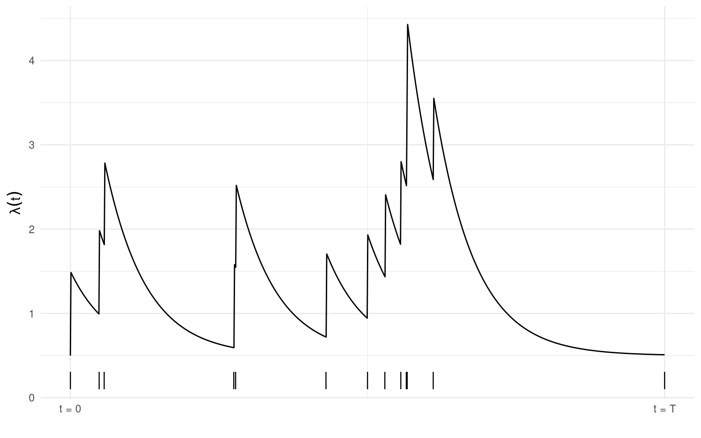
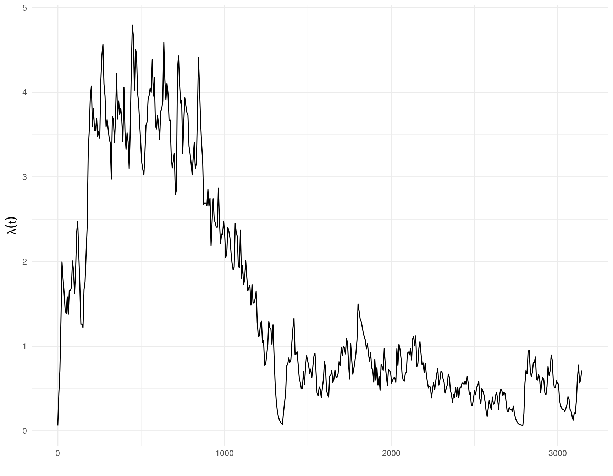
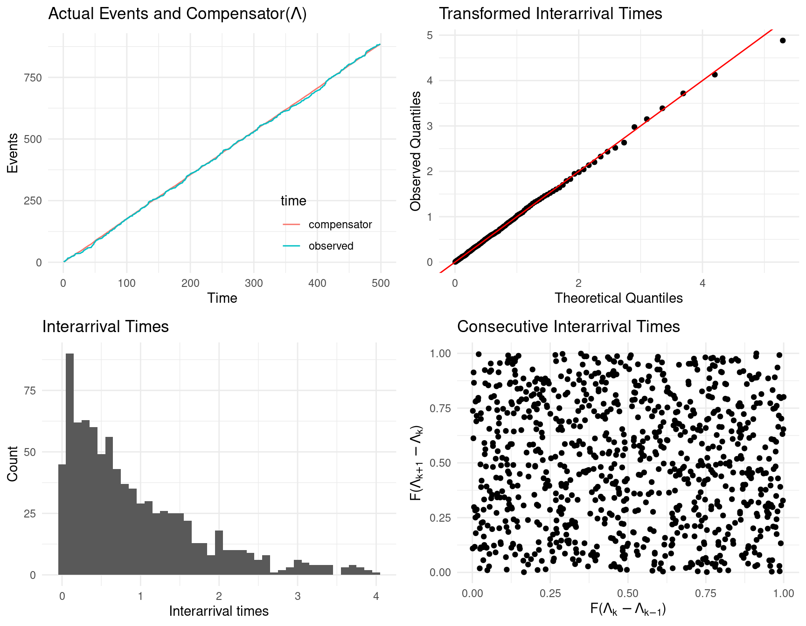
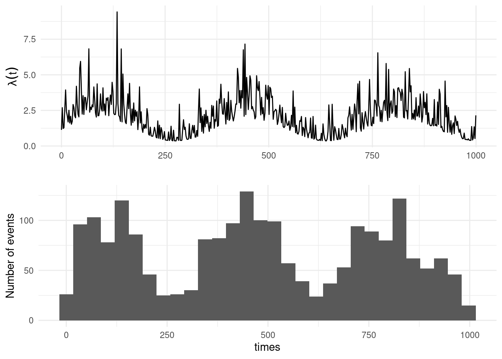
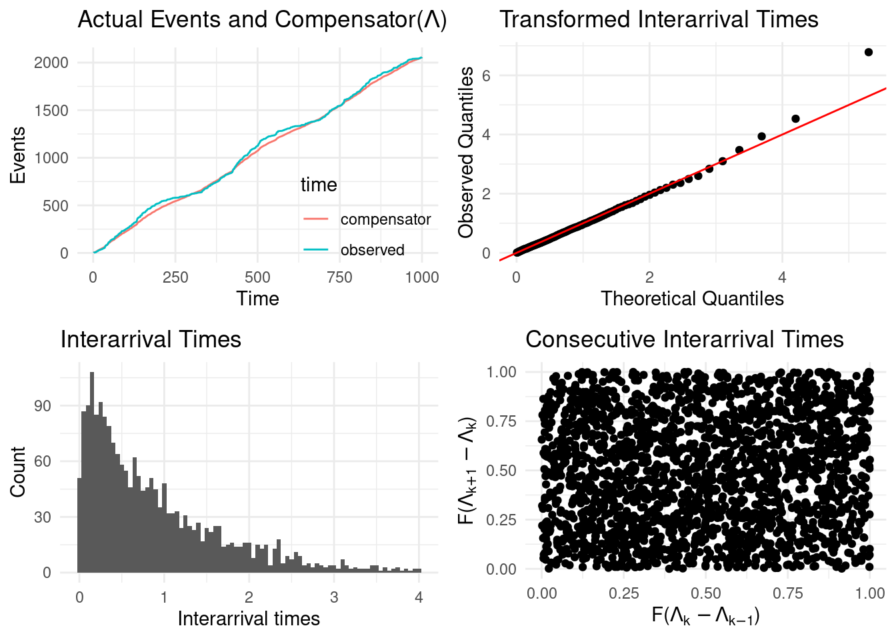

2 Univariate Hawkes
A univariate Hawkes process (Hawkes (1971)) is defined to be a self-exciting temporal point process where the conditional intensity function is given by
\[\lambda(t) = \mu(t) + \Sigma_{i:\tau_i<t}\nu(t-\tau_i).\]
Here \(\mu(t)\) is the background rate of the process and \(\Sigma_{i:\tau_i<t}\nu(t-\tau_i)\) is some historic temporal dependence (i.e., for times \(\tau_i < t\), $ i = 1, …, T$). The classic homogeneous formulation uses an exponential decay kernal:
\[\lambda(t) = \mu + \alpha \Sigma_{i:\tau_i<t}\text{exp}(-\beta * (t-\tau_i)). \tag{2.1}\]
Here the parameter \(\alpha\) is the increase in intensity immediately after the occurrence of an event, and \(\beta > 0\) controls the exponential decay of the intensity if no event has occurred. To avoid the conditional intensity heading off to infinity \(\beta > \alpha\). See (hawkesnll?) for the negative log-likelihood written in R syntax.
Plotted below is the conditional intensity (\(\lambda(t), t \in [0,T]\)) of a Hawkes process with \(\mu = 0.1\), \(\alpha = 1\), and \(\beta = 1.5\). Observed events (n = 13) are shown by the vertical dashes along the x-axis. The intensity increases immediately after an event occurs and decays exponentially over time if no event is observed for some period.
2.1 Simulating from a univariate Hawkes model
The function sim_hawkes() offers two simulation methods for simulating a realisation of a univariate Hawkes process. The default, with method = 1, uses the same method as algorithm 2 in Ogata (1981), simulating until a given time horizon (set by argument n).
sim <- sim_hawkes(mu = 0.5, alpha = 1, beta = 1.5, n = 40, plot = TRUE)The second option, setting method = 2, uses an accept/reject framework and the argument n specifies the number of points to simulate (default n = 100).
sim <- sim_hawkes(mu = 0.5, alpha = 1, beta = 1.5, plot = TRUE, method = 2)2.2 Fitting a univariate Hawkes model
require(stelfi)To fit a univariate Hawkes model in stelfi use the function fit_hawkes() with the following required arguments
times- a vector of numeric occurrence times, andparameters- a vector of named starting values for \(\mu\) (mu), \(\alpha\) (alpha), and \(\beta\) (beta).
The function get_coefs() can then be called on the fitted model object to return the estimated parameter values.
2.2.1 A simulated example
Simulating a realisation of a univariate Hawkes process (see Section 2.1 for more details) with \(\mu = 1.3\), \(\alpha = 0.4\), and \(\beta = 1.5\) (over \(t \in [0, 500]\)).
times <- sim_hawkes(mu = 1.3, alpha = 0.4, beta = 1.5, n = 500)## starting values
sv <- c(mu = 1.3, alpha = 0.4, beta = 1.5)
## using stelfi
fit <- fit_hawkes(times = times, parameters = sv)
stelfi <- get_coefs(fit)
stelfi Estimate Std. Error
mu 1.3997320 0.1125668
alpha 0.3737118 0.1207772
beta 1.7730216 0.7495558As a comparison, below emhawkes (Lee (2023)), and hawkesbow (Cheysson (2021)) are used to fit a univariate Hawkes process to the same simulated data.
## benchmark using emhawkes
require(emhawkes)
h <- new("hspec", mu = sv[1], alpha = sv[2], beta = sv[3])
## emhawkes requires the inter arrival times to fit the model
inter <- diff(times)
fit_em <- hfit(object = h, inter_arrival = inter)
em <- summary(fit_em)$estimate
em Estimate Std. error t value Pr(> t)
mu1 1.3976553 0.1091437 12.805644 1.524557e-37
alpha1 0.3683585 0.1380857 2.667608 7.639335e-03
beta1 1.7380101 0.8236957 2.110015 3.485708e-02## bench mark using hawkesbow
require(hawkesbow)
fit_bow <- mle(events = times, kern = "Exponential", end = max(times))
## use the Hessian to obtain the standard errors from hawkesbow
bow <- cbind(Estimate = fit_bow$par,
"Std. error" = -fit_bow$model$ddloglik(times, max(times)) |> solve() |> diag() |> sqrt())
bow Estimate Std. error
[1,] 1.3998368 0.11238176
[2,] 0.2107781 0.05814911
[3,] 1.7724499 0.74877227The table below gives the estimated parameter values from each of stelfi, emhawkes, and hawkesbow along with the standard errors in brackets. Note that hawkesbow estimates \(\frac{\alpha}{\beta}\) rather that \(\beta\) directly, and that the standard errors are computed here using the returned Hessian matrix \(H\) (i.e., \(\sqrt{\text{diag}{-(H^{-1})}}\)).
| \(\mu\) | \(\alpha\) | \(\beta\) | \(\frac{\alpha}{\beta}\) | |
|---|---|---|---|---|
| TRUTH | 1.300 | 0.400 | 1.500 | 0.267 |
| stelfi | 1.4 ( 0.113 ) | 0.374 ( 0.121 ) | 1.773 ( 0.75 ) | - |
| emhawkes | 1.398 ( 0.109 ) | 0.368 ( 0.138 ) | 1.738 ( 0.824 ) | - |
| hawkesbow | 1.4 ( 0.112 ) | - | 1.772 ( 0.749 ) | 0.211 ( 0.058 ) |
2.2.2 An applied example
A NIWA scientist found a working USB in the scat of a leopard seal, they then tweeted about it in the hopes of finding its owner1. The dates and times of these tweets and retweets are available in stelfi as retweets_niwa.
data(retweets_niwa)The dates/times need to be numeric and sorted in ascending order (starting a time \(t = 0\)). Note too that there can be no simultaneous events.
## numeric time stamps
times <- unique(sort(as.numeric(difftime(retweets_niwa ,min(retweets_niwa),units = "mins"))))The histogram below shows the observed counts (4772) of unique retweet times from the original tweet (\(t=0\)) to the time (just over two days later) that the owner of the USB came forward, t = 3143 mins.

To fit the model chose some starting values for the parameters and supply these along with the numeric times to the function fit_hawkes().
sv <- c(mu = 9, alpha = 3, beta = 10)
fit <- fit_hawkes(times = times, parameters = sv) ## print out estimated parameters
pars <- get_coefs(fit)
pars Estimate Std. Error
mu 0.06328099 0.017783908
alpha 0.07596531 0.007777899
beta 0.07911346 0.008109789From the estimated coefficients above
- the expected (estimated) background rate of sightings (i.e., independent sightings) is \(\hat{\mu}T =\) 0.063 \(\times\) 3143.02 \(=\) 198.89, which indicates that ~199 retweets (from the 4772) were principal retweets and that the remaining were due to self-excitement;
- the expected number of retweets “triggered” by any one retweet is estimated as \(\frac{\hat{\alpha}}{\hat{\beta}}\) = 0.96 (note the maximum this can possibly be is 1);
- the expected number of descendants per retweet is estimated as \(\frac{\hat{\beta}}{\hat{\beta} - \hat{\alpha}}\) = 25.13;
- the rate of decay for the self-excitement is estimated as \(\frac{1}{\hat{\beta}}\) = 12.64, indicating that after ~13 minutes a retweet is likely unrelated2 to the previous retweet.
The show_hawkes() function can be called on the fitted model object to plot the estimated conditional intensity and the data, top and bottom panels below respectively.
show_hawkes(fit)
2.3 Goodness-of-fit for a univariate Hawkes process
The compensator, \(\Lambda(\tilde{t})\), of any inhomogeneous Poisson process gives the expected number of events in some defined interval \([0, \tilde{t}]\) is given by
\[\Lambda(\tilde{t}) = \int_0^{\tilde{t}} \lambda(t) dt.\]
The random change theorem (Daley, Vere-Jones, et al. (2003)) states that if a set of events \([\tau_1, ..., \tau_n]\) is a realisation from a inhomogeneous Poisson process then \([\Lambda(\tau_1), ..., \Lambda(\tau_n)]\) is a realisation of a homogeneous Poisson process with unit rate. Letting \(\delta \Lambda_{i} = \Lambda(\tau_i) - \Lambda(\tau_{i-1})\) for \(i = 2, ..., N\) and \(\delta \Lambda_{1} = \Lambda(\tau_1)\), under the theorem above \(\delta \Lambda_{i} \sim \text{Exp}(1)\). Using this result a typical goodness-of-fit test is a Kolmogorov-Smirnov (KS) test (see Daley, Vere-Jones, et al. (2003) for more details) where the KS statistic is a measure of the distance between the empirical distribution of all \(\delta \Lambda_{i}\) and the CDF of a \(\text{Exp}(1)\) distribution.
The compensator differences can be extracted from a fitted model using the compensator_differences() function, and a KS test can be carried out manually:
times <- sim_hawkes(mu = 1.3, alpha = 0.4, beta = 1.5, n = 500)
sv <- c(mu = 2, alpha = 1, beta = 5)
fit <- fit_hawkes(times = times, parameters = sv)
compensator <- compensator_differences(fit)
stats::ks.test(compensator, "pexp")
Asymptotic one-sample Kolmogorov-Smirnov test
data: compensator
D = 0.013855, p-value = 0.9958
alternative hypothesis: two-sidedThis gives no evidence against the compensator values coming from a \(\text{Exp}(1)\) distribution.
Another goodness-of-fit test is the Box-Ljung (or Ljung–Box) test, which tests for autocorrelation between the consecutive compensator values (i.e., independence/stationarity).
stats::Box.test(compensator, type = "Ljung")
Box-Ljung test
data: compensator
X-squared = 0.66599, df = 1, p-value = 0.4145This gives no evidence against the consecutive compensator values being independently distributed.
Alternatively, both tests and some diagnostic plots are returned by calling the show_hawkes_GOF() function. The four panels an be interpreted as follows
- top left, plots the compensator values against the observed times, which under a well fitting model should align;
- top right, a transformed QQ plot, the observed quantities should align with the theoretical quantiles under a well fitting model;
- bottom left, the compensator differences, which under the model are assumed to be \(\text{Exp}(1)\) distributed;
- bottom right, consecutive compensator differences, which should show no obvious pattern (no autocorrelation evident) under a well fitting model.
show_hawkes_GOF(fit)
Asymptotic one-sample Kolmogorov-Smirnov test
data: interarrivals
D = 0.013855, p-value = 0.9958
alternative hypothesis: two-sided
Box-Ljung test
data: interarrivals
X-squared = 0.66599, df = 1, p-value = 0.4145
2.4 Fitting an inhomogenous Hawkes model
A univariate inhomogenous Hawkes process has \(\mu = \mu(t)\) in Equation 2.1 (i.e., the baseline is time varying, rather than being constant).
Below we simulate data from a Hawkes process with \(\mu(t) = [A + B*\text{sin}(\frac{2 \pi t}{365.25})]\) (with \(A = 1\) and \(B = 0.5\)) to represent a yearly cycle and self-exciting parameters \(\alpha = 1\) and \(\beta = 2\) using hawkesbow (Cheysson (2021)).
mut <- function(t) {
1 + 0.5*sin((2*pi*t)/365.25)
}set.seed(1)
times <- hawkesbow::hawkes(1000, fun = mut,
M = 1.5, repr = 0.5, family = "exp", rate = 2)$pTo fit this model in stelfi the function \(\mu(t)\) (background) and its integral \(\int_0^t \mu(y) dy\) (background_integral) are supplied by the user. To ensure \(\mu(t) > 0\) below \(\mu(t)\) is written as a function of \(x\) and \(y\), where \(A = e^x\) and \(B = \text{logit}(y) e^x\).
background <- function(params,t){
A = exp(params[[1]])
B = stats::plogis(params[[2]]) * A
return(A + B*sin((2*pi*t)/365.25))
}
background_integral <- function(params,x){
A = exp(params[[1]])
B = stats::plogis(params[[2]]) * A
return((A*x)-B*cos((2*pi*x)/365.25))
}These functions are then passed to the function fit_hawkes_cbf() alongside the observed times (times) and a list of starting values for both \(\mu(t)\) and the self-exciting components via the argument background_parameters and parameters respectively.
sv = list(alpha = 0.5, beta = 1.5)
background_sv = list(1,1)
fit <- fit_hawkes_cbf(times = times, parameters = sv,
background = background, background_integral = background_integral, background_parameters = background_sv)The estimated values of the the transformed \(A\) and \(B\) parameters are returned via fit$background_parameters, the code below transforms them back to the original scale.
exp(fit$background_parameters[1])[1] 1.135523plogis(fit$background_parameters[2]) * exp(fit$background_parameters[1])[1] 0.7755937The estimated values of the self-excitement parameters \(\alpha\) and \(\beta\) are returned by the get_coefs() function as usual. The table below compares the estimated values to the true ones
| \(A\) | \(B\) | \(\alpha\) | \(\beta\) | |
|---|---|---|---|---|
| TRUTH | 1.000 | 0.500 | 1.000 | 2.000 |
| stelfi | 1.136 | 0.776 | 0.985 | 2.198 |
The function show_hawkes() can be used to show the fitted model.
show_hawkes(fit)
The function show_hawkes_GOF() will show/print the model diagnostics discussed in Section 2.3.
show_hawkes_GOF(fit)
Asymptotic one-sample Kolmogorov-Smirnov test
data: interarrivals
D = 0.018277, p-value = 0.4985
alternative hypothesis: two-sided
Box-Ljung test
data: interarrivals
X-squared = 28.608, df = 1, p-value = 8.86e-08